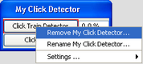

To add a PAMGuard Module, select File>Add Modules...
This provides a drop-down list of the modules available in your version of PAMGuard. Select the module type that you wish to add using your mouse.
Alternatively, modules can be added using the PAMGuard Data Model view. To access this view, select File>Show data model.... The data model view opens in a new window.
Right-click in an empty area of the this window. Select Add Modules... and the drop down module selection menu appears. Again, click on the desired module to load it.
After choosing your module, a dialogue box will appear prompting you to choose a name for the module. When you click OK, the module will be loaded into PAMGuard. You can now view the module in the Data Model view.
Module removal and re-naming can be carried out using the File>Remove Modules... menu option, or by using the Data Model view. In this view, right-clicking over the appropriate module's selector button provides a drop-down menu with options to remove or re-name the module.
